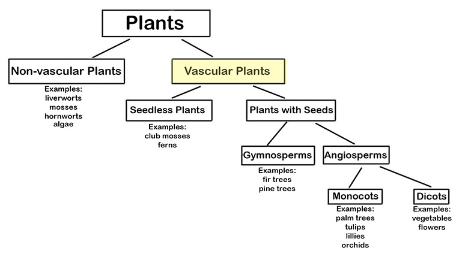
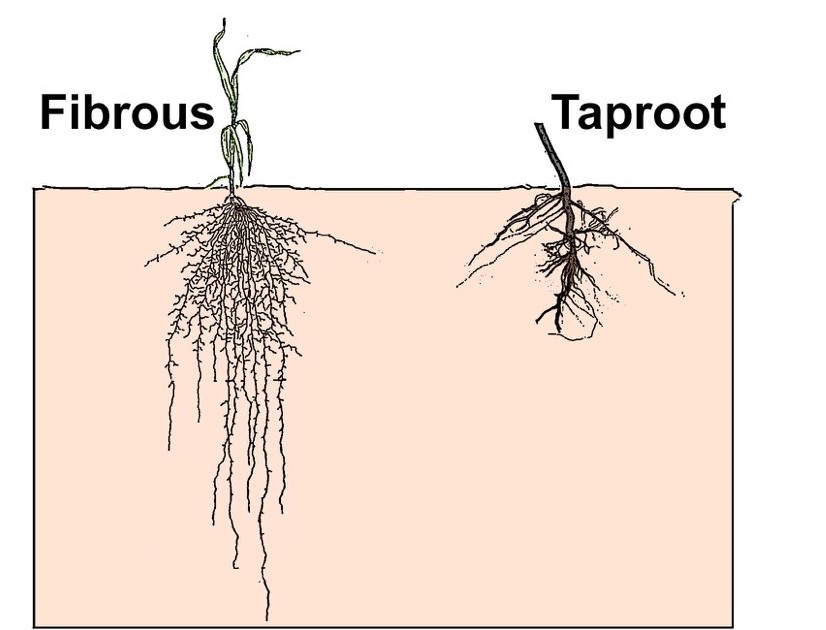
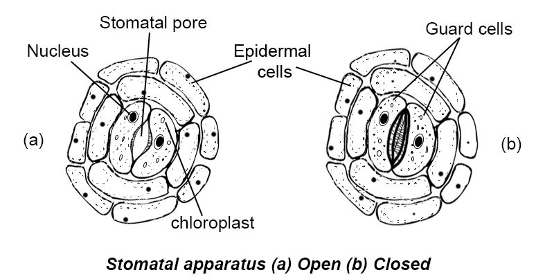

Two major Types of Plants. Plants can be divided into Vascular and Non-Vascular Plants. This unit discusses some important properties of Vascular plants.

What are Vascular Plants? You may have heard of a "vascular system" that humans have. The vascular system in humans includes the series of tubes (blood vessels) for carrying blood throughout the body. Like humans (and other animals), vascular plants have tubes for carrying water and nutrients throughout the plant. Like the walls of blood vessels in humans, the walls of these tubes in vascular plants are made of cells.
The three major parts of vascular plants are the: (a) roots, (b) stems, and (c) leaves. Each of these three major parts have tubes for carrying water and other nutrients—including the sugar plants produce in their leaves. These main parts and their sub-parts are labeled in the picture below.

Roots. Plants are held in the ground by their roots. The roots also absorb minerals and water in the soil. Plants need water (along with carbon dioxide, CO2) to make sugars during the process of photosynthesis. Plants also need water to hold their bodies upright (since, unlike many animals, they don't have skeletons). This is why plants go limp if they don't get enough water.
There are two types of roots in vascular plants: (a) fibrous roots, and (b) taproots. Some plants—like trees and sunflowers—have a system of smaller fibrous roots that spread out from the plant. This root system could be very spread out and as large as (or even larger than) the part of the plant you actually see.
Other plants—like carrots, beets and (the very annoying!) dandelions—have one large root called a taproot. This root is strong and often grows deep into the ground. A taproot is shown on the right side of the picture above. Carrots and beets that we eat are actually the roots of plants! Carrots and beets are larger than most other plant roots because these plants store food in their roots.
Stems carry substances like water and minerals from the roots to the leaves. Stems come in various sizes and shapes.
Stems can be soft or hard. Examples of soft stem plants are tomatoes, dandelions, and sunflowers. These stems often die in cold weather; they grow new stems each year. The other type of stem is woody. Woody stems have an outer covering of bark. These plants are rigid and strong. Woody plants grow tall and usually last many years. Examples of plants with woody stems are rose bushes and trees.
The Xylem of the stem carries water and dissolved nutrients from the roots to other parts of the plant. This part of the stem also provides support for the plant, helping it stay upright. The Phloem is the inner bark of the tree. It is vascular—which means it has tubes. It carries sugar and other products from the leaves—where photosynthesis occurs—to other parts of the plants.
Leaves. Leaves are a very important part of the plant. The chemical process of photosynthesis, in which the plant’s food (sugar) is made, happens in the plant’s leaves. Leaves come in different sizes and shapes like the ones you see below. Many people don't realize that pine needles are actually the leaves of evergreen trees.

Parts of Leaves and their Functions.....
The drawing above represents a magnified section of a leaf. The parts of the leaf include:
Stomata (more detail). Stomata are shown below, from the bottom or underside view of a leaf. The stoma on the left is open, and the stoma on the right is closed. Notice that stomata are made of plant cells.

Stomata are important because they open to allow CO2 to enter the leaf for photosynthesis. When
stomata open, the leaves
lose O2 and water in its gas form (also called "water vapor"). The loss of water from a leaf is
called transpiration. (Transpiration is a part of the
Water Cycle.)


***Note for Teachers: You can access more information about this website and find other resources for science inquiry on the ISP Tutor website.
©2021 Klahr Lab, Carnegie Mellon University. All Rights Reserved
Carnegie Mellon University | Dept. of Psychology | 5000 Forbes Ave. | Pittsburgh, PA 15213 The TED project was funded in part by the Institute of Education Science (IES), Grant R305H060034, and in part by the National Science Foundation, Grant SBE035442. The ISP Tutor project is funded by IES, Grant R305A170176.
The research reported here was supported by the Institute of Education Sciences, U.S. Department of Education, through Grant R305A170176 to Carnegie Mellon University. The opinions expressed are those of the authors and do not represent views of the Institute or the U.S. Department of Education.